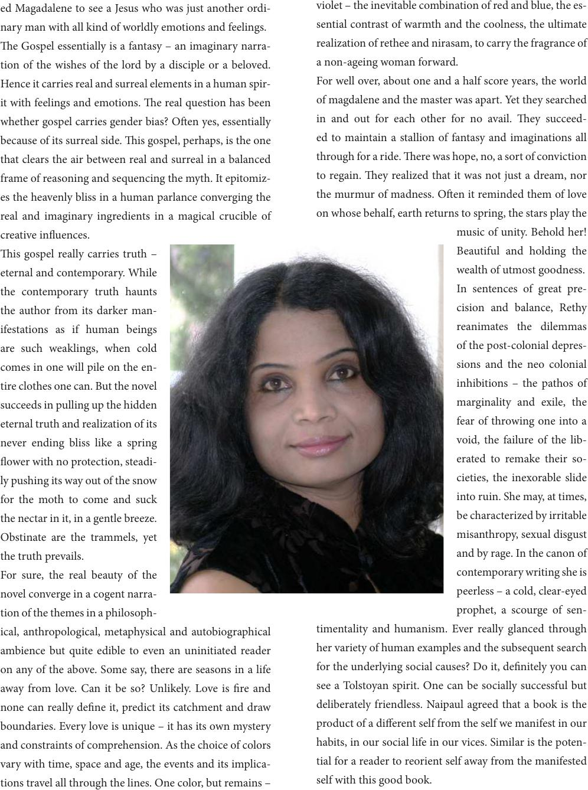

ed Magadalene to see a Jesus who was just another ordi-
nary man with all kind of worldly emotions and feelings.
e Gospel essentially is a fantasy – an imaginary narra-
tion of the wishes of the lord by a disciple or a beloved.
Hence it carries real and surreal elements in a human spir-
it with feelings and emotions. e real question has been
whether gospel carries gender bias? Oen yes, essentially
because of its surreal side. is gospel, perhaps, is the one
that clears the air between real and surreal in a balanced
frame of reasoning and sequencing the myth. It epitomiz-
es the heavenly bliss in a human parlance converging the
real and imaginary ingredients in a magical crucible of
creative inuences.
is gospel really carries truth –
eternal and contemporary. While
the contemporary truth haunts
the author from its darker man-
ifestations as if human beings
are such weaklings, when cold
comes in one will pile on the en-
tire clothes one can. But the novel
succeeds in pulling up the hidden
eternal truth and realization of its
never ending bliss like a spring
ower with no protection, steadi-
ly pushing its way out of the snow
for the moth to come and suck
the nectar in it, in a gentle breeze.
Obstinate are the trammels, yet
the truth prevails.
For sure, the real beauty of the
novel converge in a cogent narra-
tion of the themes in a philosoph-
ical, anthropological, metaphysical and autobiographical
ambience but quite edible to even an uninitiated reader
on any of the above. Some say, there are seasons in a life
away from love. Can it be so? Unlikely. Love is re and
none can really dene it, predict its catchment and draw
boundaries. Every love is unique – it has its own mystery
and constraints of comprehension. As the choice of colors
vary with time, space and age, the events and its implica-
tions travel all through the lines. One color, but remains –
violet – the inevitable combination of red and blue, the es-
sential contrast of warmth and the coolness, the ultimate
realization of rethee and nirasam, to carry the fragrance of
a non-ageing woman forward.
For well over, about one and a half score years, the world
of magdalene and the master was apart. Yet they searched
in and out for each other for no avail. ey succeed-
ed to maintain a stallion of fantasy and imaginations all
through for a ride. ere was hope, no, a sort of conviction
to regain. ey realized that it was not just a dream, nor
the murmur of madness. Oen it reminded them of love
on whose behalf, earth returns to spring, the stars play the
music of unity. Behold her!
Beautiful and holding the
wealth of utmost goodness.
In sentences of great pre-
cision and balance, Rethy
reanimates the dilemmas
of the post-colonial depres-
sions and the neo colonial
inhibitions – the pathos of
marginality and exile, the
fear of throwing one into a
void, the failure of the lib-
erated to remake their so-
cieties, the inexorable slide
into ruin. She may, at times,
be characterized by irritable
misanthropy, sexual disgust
and by rage. In the canon of
contemporary writing she is
peerless – a cold, clear-eyed
prophet, a scourge of sen-
timentality and humanism. Ever really glanced through
her variety of human examples and the subsequent search
for the underlying social causes? Do it, denitely you can
see a Tolstoyan spirit. One can be socially successful but
deliberately friendless. Naipaul agreed that a book is the
product of a dierent self from the self we manifest in our
habits, in our social life in our vices. Similar is the poten-
tial for a reader to reorient self away from the manifested
self with this good book.